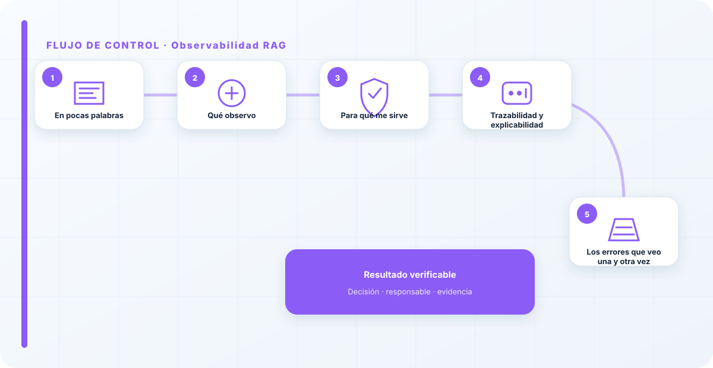
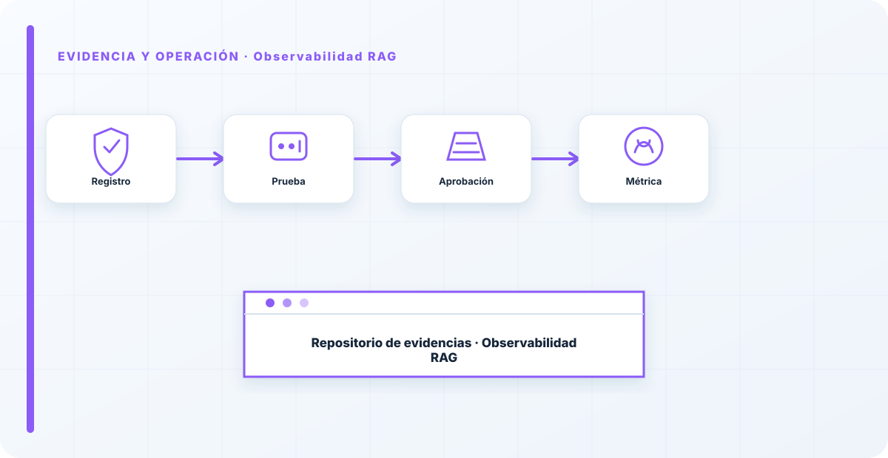

En pocas palabras
La observabilidad de un RAG añade una pregunta que un LLM suelto no tiene: ¿de dónde salió esta respuesta? Un RAG que no traza qué documentos recuperó para cada respuesta es imposible de depurar y de auditar. Cuando alguien dice "el asistente me dio un dato mal", sin trazabilidad no puedes ni saber si el problema fue el modelo alucinando o un documento malo del índice.
Qué observo
Además de todo lo de un LLM, registro la recuperación: qué se buscó, qué documentos se trajeron y cuáles se usaron realmente para construir la respuesta. Eso me permite reconstruir cualquier respuesta paso a paso, ver cuándo el RAG recupera basura, y —clave para seguridad— detectar si se recuperó algo que ese usuario no debería haber visto.
Es la diferencia entre un sistema que puedes explicar y una caja negra con acceso a tus datos. Y explicar es, cada vez más, un requisito: ante una queja o una auditoría, "no sé de dónde salió" no es una respuesta aceptable.
Para qué me sirve
La trazabilidad de la recuperación es lo que hace un RAG auditable y depurable a la vez. Se apoya en el gobierno del dato del RAG —saber qué hay en el índice y con qué permisos— y ayuda a detectar el envenenamiento, ese ataque silencioso que solo se ve mirando qué documentos influyen en las respuestas.
Sin esta capa, un RAG que empieza a comportarse raro es un misterio irresoluble; con ella, es un problema que se investiga y se corrige.

Trazabilidad y explicabilidad
Hay una razón que va más allá de lo operativo para trazar la recuperación: la explicabilidad. Cada vez más, ante una queja, una reclamación o una auditoría, tienes que poder explicar por qué el sistema respondió lo que respondió. En un RAG, esa explicación es precisamente la lista de documentos que usó. Sin trazabilidad, tu respuesta a "¿por qué me dijo esto?" es "no lo sé", y esa no es una respuesta que sostenga una auditoría ni tranquilice a un cliente.
Por eso trato la trazabilidad de la recuperación no solo como una herramienta de depuración, sino como un requisito de rendición de cuentas del sistema.
La queja más común con un RAG es "a veces se inventa cosas", y sin observabilidad de la recuperación es imposible de resolver, porque no sabes si fue el modelo o un documento malo. Ver qué recuperó para cada respuesta convierte un problema irreproducible en uno que puedes arreglar. Si no trazas la recuperación, estás depurando a ciegas y culpando al modelo de lo que a veces es un problema del índice.
Los errores que veo una y otra vez
- No registrar qué documentos se recuperaron.
- No poder reconstruir una respuesta concreta.
- No detectar cuándo se recupera contenido no autorizado.
- Culpar al modelo de lo que es un problema del índice.
- Auditar el RAG sin trazabilidad de fuentes.
Cómo lo llevaría a un entorno real
Cuando aterrizo observabilidad rag en una organización, no empiezo por comprar una herramienta ni por redactar veinte páginas. Empiezo por dibujar qué ocurre hoy: quién solicita el cambio, quién lo aprueba, qué sistemas intervienen, qué datos cruzan el proceso y quién se entera cuando algo falla. Ese dibujo suele descubrir más problemas que cualquier checklist. En observabilidad, lo peligroso no es solo carecer de controles; también lo es creer que existen porque alguien los escribió una vez.
Después separo lo imprescindible de lo deseable. Lo imprescindible debe poder comprobarse: un responsable identificado, una regla clara, una evidencia fechada y un mecanismo para reaccionar. En este caso revisaría especialmente fuentes documentales, índice vectorial y retrieval. No me vale una respuesta del tipo «lo gestiona el proveedor» o «eso lo mira seguridad». Necesito saber qué persona toma la decisión, con qué información y dentro de qué plazo.
La implantación debe crecer con el riesgo. Un piloto interno puede funcionar con una ficha breve y una revisión manual. Un sistema que afecta a clientes, empleados, dinero o información sensible necesita segregación de funciones, pruebas independientes, monitorización y un expediente mantenido. Mi criterio es sencillo: cuanto más difícil sea deshacer el daño, más fuerte debe ser la barrera antes de producción.
Decisiones que deben quedar por escrito
Hay decisiones que no deberían vivir en una reunión ni en un mensaje de chat. Para observabilidad rag dejaría documentados el alcance, los supuestos, los límites de uso, las excepciones aceptadas y las condiciones que obligan a detener o reevaluar. El documento no tiene que ser enorme, pero sí debe permitir que otra persona entienda por qué se hizo lo que se hizo.
También registraría quién puede cambiar contexto, quién valida permisos y quién recibe las alertas relacionadas con poisoning. Cuando esas tres responsabilidades se mezclan, aparece el clásico problema: el mismo equipo construye, aprueba y declara que todo funciona. No siempre se puede separar por completo, sobre todo en organizaciones pequeñas, pero al menos debe existir una revisión por alguien que no dependa del éxito inmediato del despliegue.
Las excepciones merecen un tratamiento propio. Una excepción sin fecha de caducidad acaba convirtiéndose en la arquitectura real. Por eso exigiría motivo, riesgo aceptado, responsable, compensaciones, fecha de revisión y criterio de cierre. Si falta uno de esos elementos, no es una excepción gestionada; es una deuda invisible.

Un ejemplo práctico
Imaginemos que un equipo quiere incorporar observabilidad rag a un servicio que ya está en producción. La propuesta promete reducir tiempos y automatizar tareas, pero utiliza componentes que cambian con frecuencia. Antes de aprobarlo, pediría una prueba limitada, un inventario de dependencias, un flujo de datos y una definición clara de qué acciones quedan fuera del alcance.
Durante la prueba recogería resultados normales y casos límite. No solo miraría si funciona; comprobaría qué ocurre cuando faltan datos, cambia una versión, se pierde conectividad, llega una entrada manipulada o un usuario intenta superar sus permisos. Ahí es donde se ve si el diseño aguanta. En muchas pruebas felices todo parece seguro porque nadie ha intentado romper la hipótesis de partida.
Si los resultados son aceptables, la salida a producción tendría condiciones: versión fijada, configuración aprobada, logs disponibles, responsables de guardia, procedimiento de rollback y revisión tras las primeras semanas. Si alguno de esos elementos no existe, prefiero retrasar el despliegue. Un día de demora suele ser más barato que investigar después un comportamiento que nadie puede reconstruir.
Qué evidencias guardaría
Para demostrar que el control funciona conservaría evidencias que cuenten una historia completa, no capturas sueltas. La historia debe enlazar necesidad, decisión, implementación, prueba y operación. En observabilidad rag eso incluye como mínimo la ficha del activo, el diagrama vigente, la configuración aprobada, el resultado de las pruebas y el registro de cambios.
No guardaría información por acumular. Si los logs contienen prompts, documentos, datos personales o secretos, aplicaría minimización, control de acceso y retención. La evidencia debe ayudar a investigar y auditar sin crear una segunda fuga de información. Es frecuente endurecer el sistema principal y dejar un repositorio de evidencias abierto a demasiadas personas.
- Propietario y finalidad de observabilidad rag, con fecha de revisión.
- Inventario de fuentes documentales, índice vectorial y dependencias asociadas.
- Criterios de aceptación y resultados sobre retrieval y contexto.
- Configuración efectiva, versión y aprobación del cambio.
- Alertas, incidentes, excepciones y acciones correctivas cerradas.
Señales de que el control no está funcionando
El primer síntoma es que nadie sabe responder con rapidez quién es el responsable. El segundo es que la documentación describe una versión distinta de la que está operando. El tercero es que las alertas existen, pero llegan a un buzón que nadie revisa. Cuando aparecen esos tres síntomas, el problema no es tecnológico: el control se ha desconectado de la operación.
También desconfío de las métricas demasiado perfectas. Cero incidentes, cero excepciones y cien por cien de cumplimiento pueden significar excelencia, pero con frecuencia significan que no estamos mirando. Prefiero indicadores que enseñen tendencia: tiempo de corrección, antigüedad de excepciones, cobertura de pruebas, cambios sin revisión y reincidencias.
Por último, revisaría el comportamiento después de cada cambio significativo. En IA, una actualización de modelo, dataset, prompt, herramienta, permiso o proveedor puede alterar el riesgo sin cambiar el nombre del servicio. Si el proceso solo reevalúa cuando se crea un proyecto nuevo, se quedará ciego durante la mayor parte de la vida útil.
Mi criterio de cierre
Considero que observabilidad rag está razonablemente controlado cuando el equipo puede explicar el proceso sin depender de una sola persona, reconstruir una decisión con evidencias y detener el servicio sin improvisar. No busco perfección documental; busco que la organización pueda tomar decisiones repetibles bajo presión.
El cierre no consiste en marcar todas las casillas. Consiste en demostrar que los riesgos relevantes tienen propietario, que los controles se prueban y que las desviaciones producen una acción. Si la evidencia no cambia ninguna decisión, probablemente estamos generando burocracia. Si una decisión importante no deja evidencia, estamos creando fragilidad.
Este enfoque es el que intento mantener en toda CyberLibrary AI: explicar el control de forma que lo entienda negocio, pero con suficiente profundidad para que arquitectura, seguridad, auditoría y operaciones puedan aplicarlo de verdad.
Referencias y marcos relacionados
Contenido educativo y técnico. No sustituye asesoramiento jurídico ni una auditoría formal.